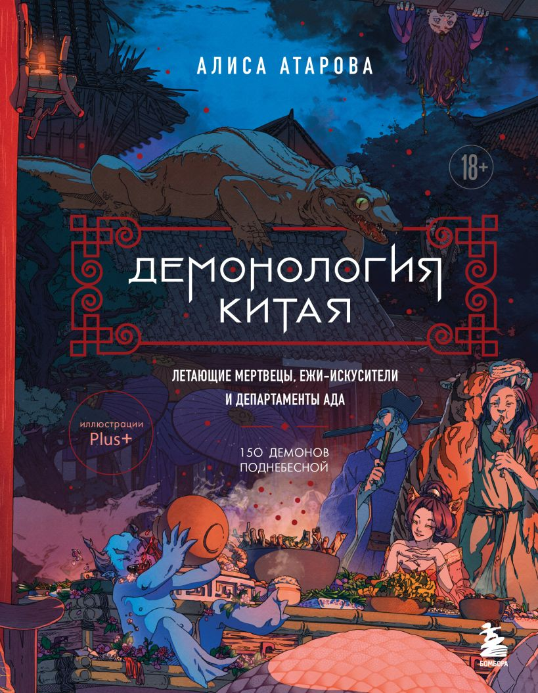

Тридцать три испытания
Тест по
демонологии Китая

Вопросы составлены по книге востоковеда Алисы Атаровой «Демонология Китая. Летающие мертвецы, ежи-искусители и департаменты Ада». Испытания подготовил Братец Лис
Порядок заданий и вариантов меняется при каждом прохождении.
1 / 33
0 верно
Испытание завершено
Ваш результат
0%0 из 33
Комментарий ⌄